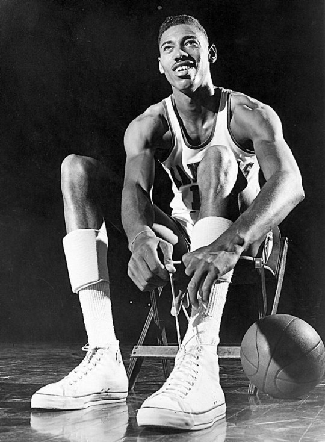
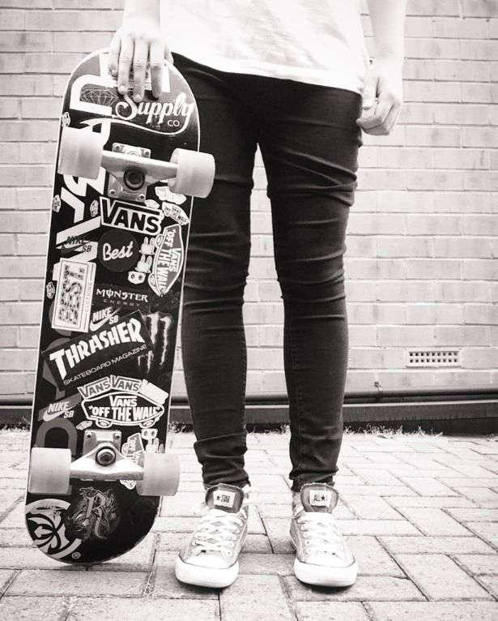
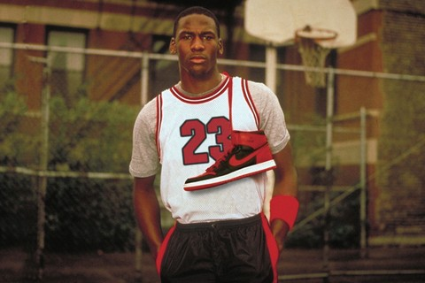
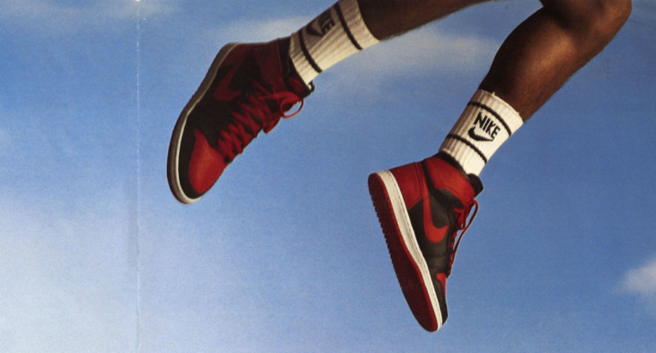
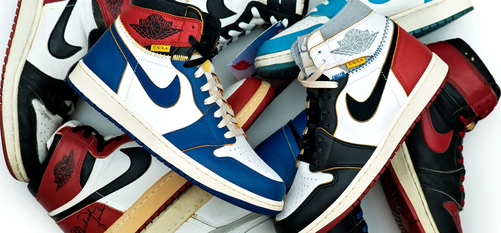

Where did it all start? It all started with the trend of sneakers in big sports leagues such as the NBA. The first ever basketball shoes were the Converse Chuck Taylor's. People would wear these shoes on the court and people started wearing them to skateboard in.
 In 1984 an NBA ledgend Michael Jordan joined the league. When he signed with Nike and created his first shoe, The air Jordan 1, it changed the sneaker world forever. This shoe is so iconic it is still worn to this day. This shoe was such a hit that it sold $70 million dollars worth in just two months! People love this shoe so much that high end brands have collaborated with it and it's been retro'd in many different colourways over the years.
  People like the jordan 1 so much that they wanted more jordan shoes and so Nike hired a shoe designer named Tinker Hatfield. Tinker had a huge role in Jordan's sneaker line from the third model and up, he designed shoes that the sneaker world loved.